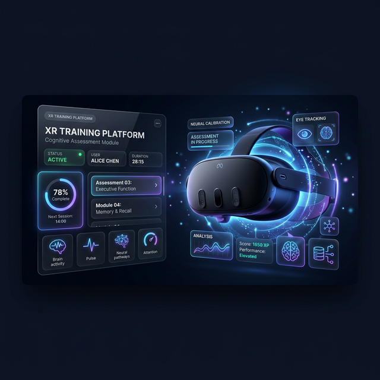
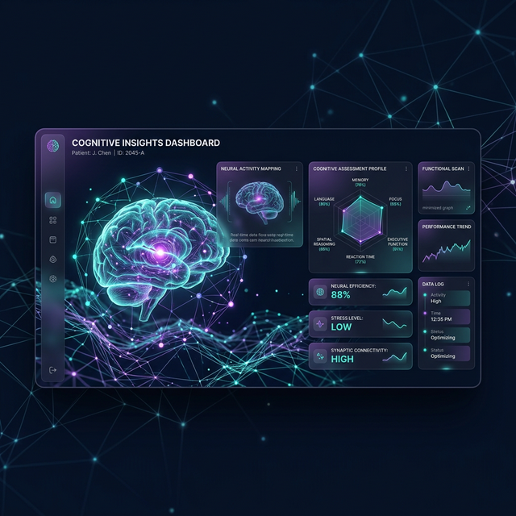
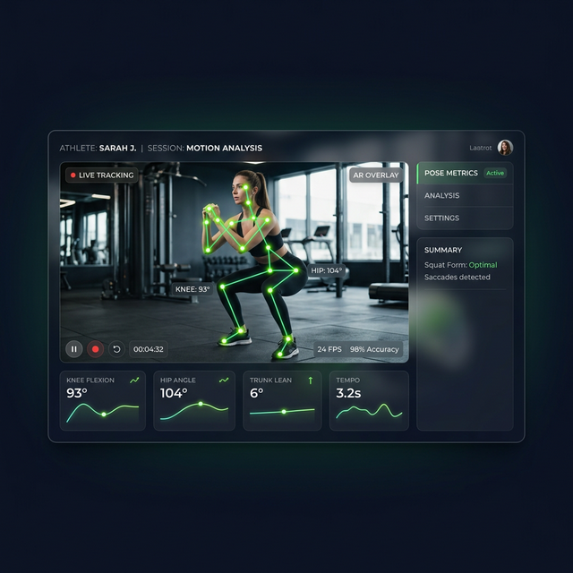

VR 인지훈련 콘텐츠 기획부터 개발까지,
실감형 XR 프로젝트를 만듭니다.



고령자를 위한 XR은 단순히 "재미있는 콘텐츠"로 완성되지 않습니다.
실제 임상 데이터가 수집되고, 현장 운영이 안정적으로 이어지는 '시스템'을 설계했습니다.
이 프로젝트는 고령자의 인지·운동 기능 향상과 임상 데이터 수집을 동시에 목표로 한 XR 기반 비대면 훈련 시스템입니다. 단순한 체험형 VR이 아니라, 실제 임상 환경에서 반복적으로 사용될 수 있는 구조를 만드는 것이 핵심이었습니다.
기존에는 레거시 기반 콘텐츠와 복잡한 운영 구조, 고령자에게 적합하지 않은 UX, 불안정한 실행 환경 등 여러 문제가 혼재되어 있었습니다. 저는 이 프로젝트에 중간 투입된 이후, 산개된 자료와 기존 구조를 다시 정리하고, 고령자 기준의 UX와 임상 운영 흐름에 맞춰 전체 구조를 재설계했습니다.
단순히 화면이나 기능을 기획하는 역할에 그치지 않고, 실제로 프로젝트가 굴러가도록 만드는 기준과 흐름을 설계하는 데 집중했습니다.
기존 업체가 제작한 콘텐츠는 기능 자체는 존재했지만, 실제 고령자가 사용하기에는 여러 한계가 있었습니다. 저는 이 프로젝트를 단순 개선이 아니라, 고령자가 실제로 사용할 수 있는 구조로 다시 설계하는 작업이라고 판단했습니다.
무한하게 펼쳐진 공간형 씬은 시각적 정보량이 과했고, 목표 오브젝트에 집중하기 어려웠습니다.
VR 환경에 익숙하지 않은 고령자에게는 공간 적응과 멀미 부담이 컸습니다.
런처 구조가 지나치게 깊어 실제 운영 효율이 떨어졌습니다.
이 프로젝트에서 가장 먼저 다시 정의한 것은 기능이 아니라 사용자였습니다. "가능한 기능"보다 "실제로 수행 가능한 경험"을 만드는 것이 더 중요했습니다.
UI를 해치지 않는 선에서 충분히 크게 설계하고, 교수자가 UI 크기를 제어할 수 있도록 구성
핸드트래킹 민감도를 높이고, 오브젝트 콜라이더를 크게 적용해 작은 오차에도 성공 경험으로 연결
배경과 오브젝트를 정적으로, 공간을 과감하게 축소. 노년층이 구분하기 쉬운 색상 조합으로 조정
고령자는 쉽게 피로해지고 실패 경험에 민감 — 콘텐츠 진행 시간과 난이도를 세밀하게 조율
이 프로젝트에서 중요한 것은 고난도 게임을 만드는 것이 아니라,
사용자가 끝까지 수행할 수 있는 구조를 만드는 것이었습니다.
색상, 종류, 방향, 위치, 기억 과제를 결합한 복합 훈련. 손으로 곤충을 잡아 채집함에 넣는 직관적 상호작용을 기반으로, 단계별로 협동·규칙 이해·기억 재구성까지 확장.
던지기, 받기, 분류하기의 흐름 안에서 협응, 상지 움직임, 타이밍 반응, 지시 이해를 유도하는 협동형 콘텐츠. 익숙한 오브젝트로 심리적 진입장벽을 낮추면서 단계별 확장.
시각·촉각 주의력, 기억등록/인출, 시공간 기능, 이름대기 등 9가지 항목과 반응 시간을 수집하는 종합 인지기능 평가.
Force Plate를 웹소켓으로 연동해 실시간 발 압력 분포와 자세 안정성을 확인. XR 훈련 전반의 안전도를 보완.
화상 기반 자세 수업과 MR 오브젝트 상호작용을 연결한 1:1 구조의 PoC 콘텐츠. 실제 서비스 확장 가능성을 검토.
런처는 단순한 시작 화면이 아니라, 현장에서 반복적으로 세션을 운영하기 위한 핵심 시스템이었습니다. 콘텐츠가 아무리 좋아도 운영자가 매번 진입 과정에서 헤매면 실제 사용성은 급격히 떨어집니다.
이 프로젝트는 처음부터 새로 설계하는 일이 아니었습니다. 레거시 구조를 인수받은 상태에서 일정은 이미 불안정했고, 기능은 많았으며, 클라이언트와의 신뢰도는 아직 형성되지 않은 상황이었습니다.
저는 먼저 기존 자료를 전부 다시 읽고 구조화한 뒤, 다이어그램과 기획서를 새로 정리해 미팅에 들어갔습니다. 어디까지가 기존 합의인지, 어디부터 제가 개입해야 하는지를 명확히 질문했고, 기능 요청이 쌓일 때마다 최종적으로 무엇을 만들고 싶은지 엔드포인트를 다시 확인했습니다.
"안 되는 이유"를 먼저 말하기보다, 어떻게 하면 구현 가능하게 만들 수 있는지, 그리고 완전히 같지는 않더라도 목적에 가장 가까운 대안을 어떻게 제안할 수 있는지를 먼저 고민하는 것이었습니다.
실제 임상 환경에서 안정적으로 운영 가능한 XR 훈련 구조 구축
클라이언트가 지속 참여를 조건으로 차기 연차·예산 확대를 제안
차기 연차 연계 및 기술이전 논의로 발전, 장기 협업 구조 확보
이 프로젝트는 저에게 "기획은 문서를 만드는 일이 아니라, 실제로 필요한 구조를 현실 안에서 작동하게 만드는 일"이라는 점을 더 분명하게 보여준 경험이었습니다.
고령자 사용성, 임상 데이터, 안전도, 운영 구조, 이해관계자 조율, 개발 현실성까지 함께 고려해야 했고, 그 안에서 가장 적절한 방향을 계속 판단해야 했습니다.
이 프로젝트를 통해 저는 XR 콘텐츠를 만든 것이 아니라,
고령자에게 실제로 작동하는 XR 훈련 시스템을 설계하고
운영 가능한 구조로 정리하는 일을 했습니다.